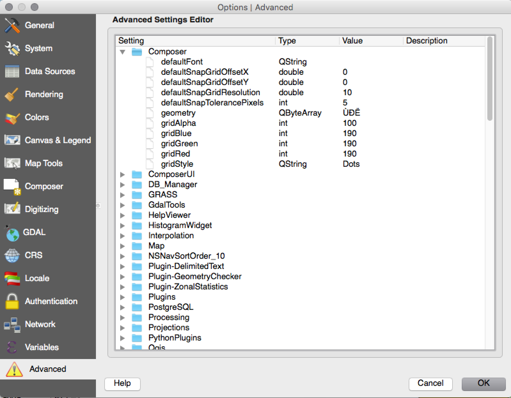
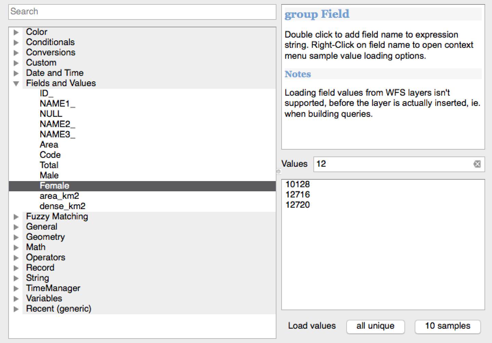
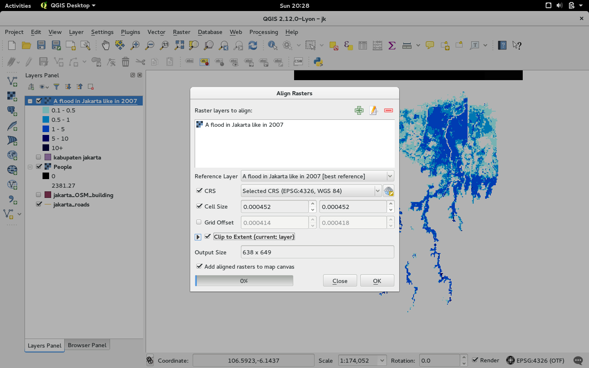
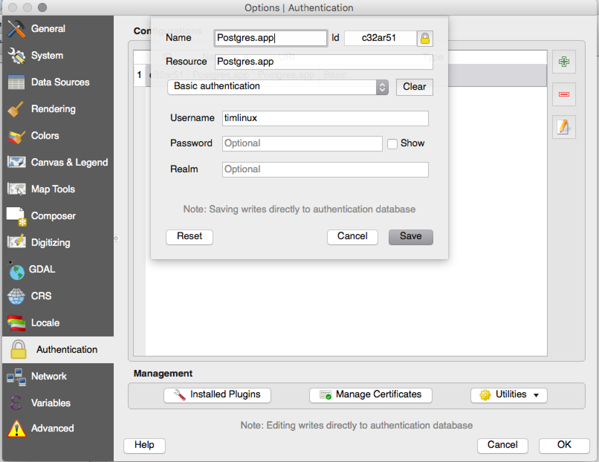
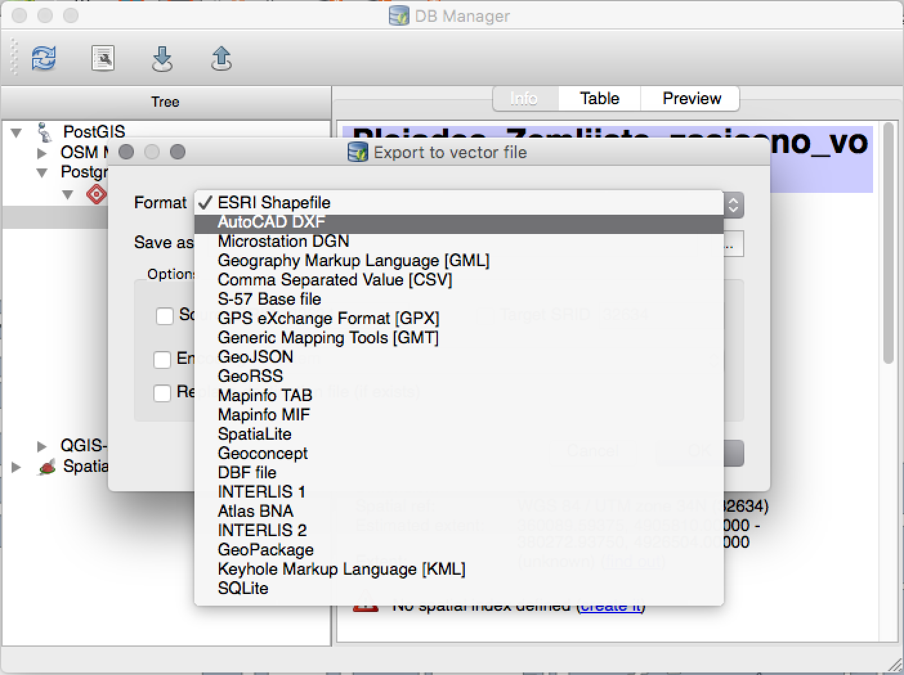
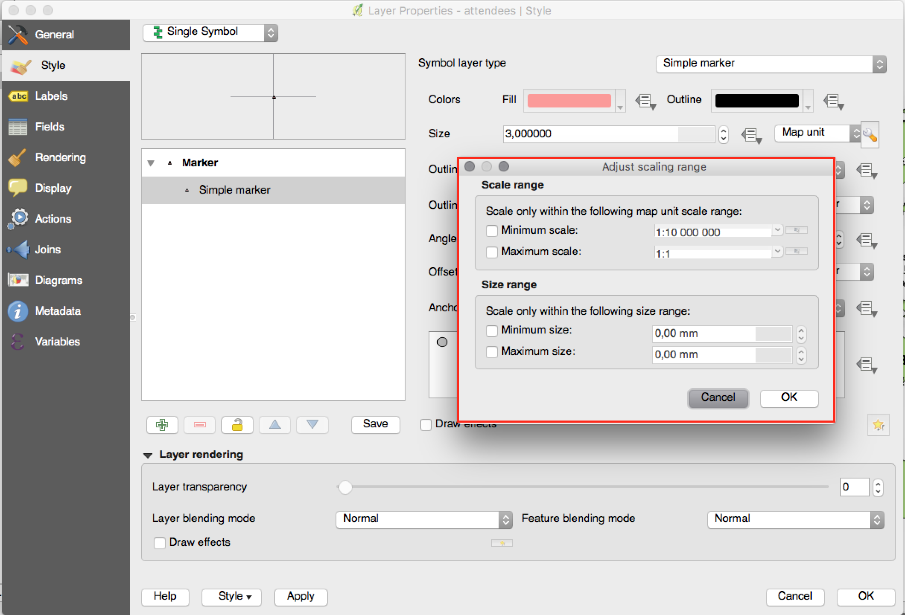

Log met wijzigingen voor QGIS 2.12¶

Dit is het log met wijzigingen voor de volgende uitgave van QGIS - versie 2.12.0 ‘Lyon’ - gastheer voor de ontmoeting van de ontwikkelaars in april 2012.
Nieuwe mogelijkheden in QGIS 2.12 ‘Lyon’
Dit is de volgende uitgave in onze 4-maandelijkse uitgaveserie. Het geeft u toegang tot de nieuwe mogelijkheden waaraan we hebben gewerkt en vertegenwoordigt het ‘ultieme product’ van de ontwikkeling van QGIS.
QGIS ‘Lyon’ is verpakt met fantastische nieuwe mogelijkheden. Speciale vermeldingen zijn ondersteuning voor op regels gebaseerd labelen, op regels gebaseerd opmaken van attributentabellen en geavanceerde controle voor geometrieën, ondersteuning voor digitaliseren van op bogen gebaseerde geometrieën, beter beheer van authenticatie en nog veel, veel meer! QGIS 2.12 bevat ook vele oplossingen voor problemen en geheugenlekken. De in QGIS 2.12 verschafte mogelijkheden zullen worden opgenomen in de volgende LTR-uitgave (geplande uitgave in 2016), dus verschaft het gebruik van deze uitgave u een excellente mogelijkheid om nieuwe mogelijkheden te testen die hun weg zullen vinden in de volgende LTR.
Wanneer nieuwe mogelijkheden worden toegevoegd aan de software introduceren zij de mogelijkheid van nieuwe problemen - indien u een probleem met deze uitgave tegenkomt, maak dan een ticket aan op de QGIS Bug Tracker. Indien u werkt in een productieomgeving waar u meer conservatief wilt zijn met betrekking tot het uitrollen van nieuwe mogelijkheden aan uw gebruikers, verschaffen we ook een Long Term Release (LTR)-versie van QGIS. De huidige LTR is versie 2.8.3 en die is beschikbaar op download.qgis.org.
Thanks
We willen de ontwikkelaars, schrijvers van documentatie, testers en alle andere vele mensen bedanken die vrijwillig hun tijd en inspanningen bijdragen (of mensen ondersteunen om dat te doen).
From the QGIS community we hope you enjoy this release! If you wish to donate time, money or otherwise get involved in making QGIS more awesome, please wander along to qgis.org and lend a hand!
Tenslotte willen we onze officiële sponsoren bedanken voor de onschatbare financiële ondersteuning die zij aan dit project verlenen:
- GOUDEN sponsor: Asia Air Survey, Japan
- ZILVEREN Sponsor: AGH University of Science and Technology, Krakow, Polen
- ZILVEREN sponsor: Staat Vorarlberg, Oostenrijk
- ZILVEREN sponsor: Office of Public Works, Ierland, Ierland
- ZILVEREN sponsor: Sourcepole AG, Switzerland
- BRONZEN sponsor: Lutra Consulting, VK
- BRONZEN sponsor: WhereGroup GmbH & Co. KG, Duitsland
- BRONZEN sponsor: Nicholas Pearson Associates, VK
- BRONZEN sponsor: QGIS Poland, Polen
- BRONZEN sponsor: www.terrelogiche.com, Italië
- BRONZEN Sponsor: GeoSynergy, Australië
- BRONZEN Sponsor: Gaia3D, Zuid-Korea
- BRONZEN Sponsor: Royal Borough of Windsor and Maidenhead, VK
- BRONZEN Sponsor: Chartwell Consultants Ltd, Canada
- BRONZEN Sponsor: Trage Wegen vzw, België
- BRONZEN Sponsor: GFI - Gesellschaft fr Informations technologie mbH, Duitsland
- BRONZEN sponsor: GKG Kassel,(Dr.-Ing. Claas Leiner), Duitsland
- BRONZEN Sponsor: GIS-Support, Polen
- BRONZEN sponsor: ADLARES GmbH, Duitsland
- BRONZEN sponsor: www.molitec.it, Italië
- BRONZEN sponsor: www.argusoft.de, Germany
- BRONZEN sponsor: Customer Analytics, USA
- BRONZEN sponsor: Avioportolano Italia, Italië
- BRONZEN Sponsor: Faculty of Geology, Geophysics and Environmental Protection, AGH, University of Science and Technology, Polen
- BRONZEN sponsor: Urbsol, Australië
- BRONZEN sponsor: MappingGIS, Spanje
- BRONZEN Sponsor: GIS3W, italië
A current list of donors who have made financial contributions large and small to the project can be seen on our donors list. If you would like to become and official project sponsor, please visit our sponsorship page for details. Sponsoring QGIS helps us to fund our six monthly developer meetings, maintain project infrastructure and fund bug fixing efforts.
QGIS is gratis software en u bent niet verplicht om maar iets te betalen voor het gebruiken ervan - in feite willen we mensen, wijd en zijd verspreid, aanmoedigen om het te gebruiken ongeacht uw financiële of sociale status - wij geloven dat het uitrusten van mensen met gereedschappen voor het maken van ruimtelijke beslissingen zal resulteren in een betere wereld voor de gehele mensheid.
- Algemeen
- Mogelijkheid: Nieuw welkomstscherm
- Mogelijkheid: Doorlopende verbeteringen aan kwaliteit van de code
- Mogelijkheid: Geavanceerde instellingen bewerken
- Mogelijkheid: Gezamenlijke exclusieve groepen in lagenboom
- Mogelijkheid: Filteren op veldwaarden in widget Expressie
- Mogelijkheid:: Ondersteuning voor thema in gebruikersinterface
- Mogelijkheid: Nieuwe functies voor expressies in 2.12
- Mogelijkheid: Variabelen in expressies
- Analyse-gereedschappen
- Opties voor toepassing en projecten
- Browser
- Gegevensproviders
- Gegevensbeheer
- Digitaliseren
- Labelen
- Mogelijkheid: Gegevens gedefinieerd kwadrant indien in modus “rondom punt”
- Mogelijkheid: Alleen labels teken die passen binnen polygonen
- Mogelijkheid: Beheren van prioriteit voor labelen van obstakel
- Mogelijkheid: Nieuwe opties om te beheren hoe polygoonlagen dienen als obstakels
- Mogelijkheid: Gegevens gedefinieerd beheer over prioriteit van labels
- Mogelijkheid: Optie voor lagen met alleen obstakels
- Mogelijkheid: Op regels gebaseerd labelen
- Printvormgeving
- Mogelijkheid: Verbeteringen aan navigatie in atlas
- Mogelijkheid: Aangepaste indeling voor annotaties van het raster
- Mogelijkheid: Tekstafhandeling voor meerdere regels en automatische tekstdoorloop in attributentabellen van Printvormgeving
- Mogelijkheid: Geavanceerde aanpassing van achtergrondkleur van cellen
- Mogelijkheid: Optie Pagina aanpassen aan inhoud toegevoegd en opties voor bijsnijden van export naar inhoud
- Mogelijkheid: Vectorlagen forceren om te renderen als rasterafbeeldingen
- Mogelijkheid: Gegevens gedefinieerd beheer over kaartlagen en voorkeuren voor opmaak
- Mogelijkheid: Optie om pagina’s te verbergen in een weergave/export
- Plug-ins
- Programmeerbaarheid
- QGIS Server
- Symbologie
- Mogelijkheid: Miniaturen exporteren vanuit Stijlbeheer
- Mogelijkheid: Nieuwe optie voor beperken van de grootte in mm bij gebruiken van grootten in kaarteenheden
- Mogelijkheid: Verbeteringen aan renderer voor verplaatsingen
- Mogelijkheid: Alle kleurverlopen kunnen nu worden bewerkt
- Mogelijkheid: Verbeterde behandeling van SVG markeringsomtrekkken
- Mogelijkheid: Pixels toegevoegd als optie voor alle keuzen van de eenheid van grootte voor Symbologie
Algemeen¶
Mogelijkheid: Nieuw welkomstscherm¶
In plaats van eenvoudigweg een blanco, wit venster weer te geven, zal QGIS u nu een lijst van uw meest recente projecten laten zien, samen met miniaturen om snel en eenvoudig terug te keren naar het werk dat u achterliet in uw laatste sessie.
Deze mogelijkheid werd ontwikkeld door: Matthias Kuhn op OPENGIS.ch

Mogelijkheid: Doorlopende verbeteringen aan kwaliteit van de code¶
Door het gebruiken van de bibliotheek address sanitizer zijn honderden geheugenlekken geïdentificeerd en opgelost. Geautomatiseerde scans van de code met behulp van Coverity Scan worden regelmatig uitgevoerd om potentiële problemen te identificeren, en onze Coverity defectdichtheid is nu indrukwekkend laag op slechts 0.02 defecten per 1000 regels code. De bibliotheek met geautomatiseerde unittesten is ook significant gegroeid gedurende 2.12, wat resulteert in meer geïdentificeerde regressies, die onmiddellijk werden opgelost. In 2.12 hebben we ook doorlopende testen toegevoegd op OSX, zodat elke toevoeging wordt getest tegen de suite van unittesten op zowel Linux- als OSX-platformen.

Mogelijkheid: Geavanceerde instellingen bewerken¶
Een nieuw paneel is toegevoegd aan het dialoogvenster Instellingen dat u de opties laat bewerken die al zijn gedefinieerd in uw profiel. Dat is alleen bedoeld voor gevorderde gebruikers omdat u onverwacht gedrag zou kunnen ervaren in QGIS als u deze instellingen wijzigt zonder dat u volledig begrijpt wat u doet.
Deze mogelijkheid werd ontwikkeld door: Matthias Kuhn op OpenGIS

Mogelijkheid: Gezamenlijke exclusieve groepen in lagenboom¶
Met deze mogelijkheid kunt u lagen groepen maken waarvan per keer slechts één laag in de groep zichtbaar kan zijn. De mogelijkheid kan individueel worden geschakeld voor groepen in het contextmenu van de Lagenboom.
Deze mogelijkheid werd ontwikkeld door: Martin Dobias van`Lutra Consulting <http://www.lutraconsulting.co.uk/>`__ onder subcontract van Gis3W
Deze mogelijkheid werd mogelijk gemaakt door: Tuscany Region (Italië) - SITA (CIG: 63526840AE)

Mogelijkheid: Filteren op veldwaarden in widget Expressie¶
Bij het maken van een expressie die waarden uit ene veld gebruikt, kunt u nu de de velden filteren in een voorbeeldpaneel.
Deze mogelijkheid werd ontwikkeld door: Salvatore Larosa

Mogelijkheid:: Ondersteuning voor thema in gebruikersinterface¶
QGIS 2.12 ondersteunt nu thema’s voor de gebruikersinterface wat u kunt gebruiken om de achtergronden van vensters, knoppen etc aan te passen. Standaard worden twee thema’s meegeleverd: Default en Night mapping. De laatste is een donker thema dat sommige mensen prefereren als zij vinden dat lichtere thema’s hun ogen belasten. Als een beetje weet van CSS kunt u ook vrij gemakkelijk uw eigen aangepaste thema’s maken…
Meer over de ondersteuning voor thema’s in Nathan Woodrow’s blogartikel.
Deze mogelijkheid werd ontwikkeld door: Nathan Woodrow

Mogelijkheid: Nieuwe functies voor expressies in 2.12¶
Een aantal functies voor “fuzzy overeenkomsten” is toegevoegd. Deze bevatten functies voor het zoeken naar overeenkomsten in twee tekenreeksen en ook voor het uitvoeren van fonetische overeenkomsten tussen tekenreeksen, en stellen u in staat filters uit te voeren voor records die “bijna overeenkomen” met een gespecificeerde tekenreeks.
Ook zijn meer op geometrie gebaseerde functies toegevoegd, inclusief:
num_points(geom)voor het berekenen van het aantal knopen in een geometriearea(geom),length(geom)enperimeter(geom), voor het berekenen van het gebied, lengte en perimeter van enig object geometrie. Eerder was slechts berekening van het gebied, lengte en perimeter van de geometrie van het huidige object mogelijk.start_point(geom),end_point(geom),point_n(geom), voor het achterhalen van het eerste, laatste en genummerde punten van een geometriemake_point(x,y), vo het handmatig maken van een puntgeometrie- functies
x(geom),y(geom)die de X- en Y-coördinaten voor puntgeometrieën teruggeven of de zwaartepunt X/Y voor niet-puntgeometrieën
Een nieuwe functie project_color is toegevoegd, die u in staat stelt op naam een kleur uit het kleurenschema van het project te achterhalen. Dit stelt u in staat ‘gekoppelde kleuren’ te maken, waarmee de kleuren van een symbool of componenten van labelen kunnen worden gebonden aan een kleur uit het kleurenschema van het project. Werk de kleur in het schema bij en alle gekoppelde kleuren zullen automatisch worden bijgewerkt om overeen te komen!
Aanvullend zijn enkele bijzonder handige expressies geporteerd vanuit de plug-in Expressions+, inclusief:
color_part: die het mogelijk maakt een specifieke kleurcomponent (bijv rood, tint, alfa) van een kleur te achterhalenset_color_part: die het mogelijk maakt een specifieke kleurcomponent te overschrijven, bijv de Alfawaarde (doorzichtbaarheid) van een kleurday_of_week: geeft de dag van ene week terug als een getal uit een datum
Aanvullend is de contexthelp voor functies van expressies verbeterd voor betere leesbaarheid.

Mogelijkheid: Variabelen in expressies¶
U kunt nu aangepaste variabelen definiëren om te gebruiken in expressies. Variabelen kunnen worden gedefinieerd op het globale niveau van de toepassing, niveau van het project, niveau van de laag en op het niveau van de lay-out. Net als met gestapelde regels van CSS kunnen variabelen worden overschreven - bijv een variabele op het niveau van het project zal elke variabele die is ingesteld op het niveau van de toepassing overschrijven. U kunt deze variabelen gebruiken om tekenreeksen van tekst of andere aangepaste expressies te bouwen. Bijvoorbeeld in de lay-out een label maken met deze inhoud:
Deze kaart werd gemaakt met QGIS [% @qgis_version %]. Het projectbestand voor deze kaart is: [% @project_path %]
Zal het label renderen zoals hier:
Deze kaart werd gemaakt met QGIS 2.12. Het projectbestand voor deze kaart is: /gis/qgis-user-conference-2015.qgs
U kunt globale variabelen beheren vanuit het menu Instellingen -> Opties en variabelen op het niveau van het project vanuit Projecteigenschappen (inclusief het toevoegen van uw eigen aangepaste variabelen).
Deze mogelijkheid werd ontwikkeld door: Nyall Dawson

Analyse-gereedschappen¶
Mogelijkheid: Aantal punten in afgeleide velden in het gereedschap Objecten identificeren toegevoegd¶
Gebruiken van het gereedschap Objecten definiëren op een object Lijn zal nu het aantal punten in het object weergeven als een aanvullend afgeleid attribuut.
Mogelijkheid: Gereedschap Raster uitlijnen¶
Dit nieuwe gereedschap in de bibliotheek qgis_analysis is in staat om meerdere rasters als invoer te gebruiken en:
- opnieuw projecteren naar hetzelfde CRS
- opnieuw samplen naar dezelfde celgrootte en verschuiving in het raster
- een interessegebied te clippen
- waarden, indien nodig, opnieuw op schaal te brengen
Deze mogelijkheid werd ontwikkeld door: Martin Dobias at Lutra Consulting onder subcontract voor Kartoza
Dit werd mogelijk gemaakt door: DFAT voor het project InaSAFE

Mogelijkheid: Plug-ins Geometry Checker en Geometry Snapper¶
Twee nieuwe plug-ins (die u handmatig dient te activeren in Plug-ins beheren en installeren) zijn beschikbaar voor het controleren en corrigeren van geometrieën. De plug-in Geometry Checker (rechts weergegeven) zal uw vector gegevensset controleren en corrigeren op een aantal verschillende typen systematische fouten en ze voor u proberen op te lossen. Na het oplossen van een fout, wordt de foutenlijst automatisch bijgewerkt zodat als, bijvoorbeeld, het oplossen van één fout ook andere fouten oplost, alle fouten worden verwijderd van de foutenlijst.
Met het gereedschap Geometry Snapper kunt u de randen en punten van de ene vectorlaag uitlijnen aan de randen en punten van een tweede laag met behulp van een gebruikergedefinieerde tolerantie.
Deze mogelijkheid werd ontwikkeld door: Sandro Mani op Sourcepole AG
Deze mogelijkheid werd mogelijk gemaakt door: Canton Solothurn

Opties voor toepassing en projecten¶
Mogelijkheid: Beheren van versleutelde wachtwoorden¶
QGIS 2.12 introduceert een nieuw authenticatiesysteem (bekijk PR 2330, QEP 14. Hier is wat er in is opgenomen:
- Configuraties van authenticatie met versleuteld hoofdwachtwoord opgeslagen in een database van SQLite
- Authenticatiemethode met plug-in architectuur (zoals gegevensproviders)
- plug-in Basis authenticatiemethode
- Basis plug-in geïntegreerd met PostGIS- en OWS-provider verbindingen
- In lijn met de huidige opzet van gebruikersnaam/wachtwoord (nog steeds volledig te gebruiken)
- Configuraties voor SSL-serververbinding (uitzonderingen opslaan of aangepaste configuraties voor verbindingsfouten in SSL)
PKI-authenticatie gerelateerd:
- Importeren van extra Certificate Authorities, uitgevers van tijdelijke certificaten en persoonlijke identiteitsbundels
- Certificaatcomponenten beheren zoals in Firefox
- Plug-ins voor authenticatiemethode voor PEM en PKCS#12 bundels op schijf, en voor opgeslagen persoonlijke identiteiten
- Geïntegreerd met verbindingen van OWS-provider (PostGIS en andere databases zullen iets meer werk vergen)
Voor gedeelde projectscenario’s, inclusief een set-up voor netwerkschijf, u kunt de configuratie voor de authenticatie (authcfg) ID bewerken naar iets dat wordt gedeeld door gebruikers.
Omdat de authcfg ID is ingebed in het projectbestand, dient elke gebruiker een configuratie voor authenticatie die hun specifieke gegevens bevat voor die bron, dan de ID bewerken (bij het maken van de configuratie of later) naar dezelfde ID als in het projectbestand. Dan, wanneer de bron wordt geladen, zal dezelfde configuratie worden bevraagd voor QGIS van iedereen, net als hun respectievelijke gegevens voor de gebruikte methode voor authenticatie.
Voor het dialoogvenster Handle Bad Layers kunnen gebruikers configuraties voor authenticatie Toevoegen/Berwerken/Verwijderen in het dialoogvenster en de URI van de gegevensbron hebben bijgewerkt, zodat die overeenkomt. Dus in het scenario van een gedeeld project, zou de gebruiker onmiddellijk een toepasselijke nieuwe configuratie voor authenticatie kunnen toevoegen (en exact zien welk gedeelde ID voor configuratie voor authenticatie zou moeten worden gebruikt) bij het laden van een project.
Momenteel kan het automatisch instellen van het hoofdwachtwoord worden ingesteld via Python, of door middel van een aangepaste plug-in in C++, bij het starten van set-ups met behulp van een aanroep van QgsAuthManager::instance()->setMasterPassword( "mypassword", true ), of door de omgevingsvariabele QGIS_AUTH_PASSWORD_FILE in te stellen op het pad naar een bestand met het hoofdwachtwoord.
Opmerking: voor Server, kunt u ook QGIS_AUTH_DB_DIR_PATH gebruiken om het pad in te stellen naar een map qgis-auth.db en QGIS_AUTH_PASSWORD_FILE om het pad in te stellen naar een bestand met het hoofdwachtwoord op de server.
PKI voorbeeld documenten: https://github.com/dakcarto/QGIS-Enhancement-Proposals/blob/auth-system/extras/auth-system/pkiuser.rst
Deze mogelijkheid werd ontwikkeld door: Larry Shaffer
Deze mogelijkheid werd mogelijk gemaakt door: Boundless Spatial, Inc.

Browser¶
Mogelijkheid: Verbeteringen aan verbindingen naar PostGIS in browser¶
De browser van QGIS ondersteunt nu aanvullende functionaliteit voor verbindingen van PostGIS, inclusief de mogelijkheid om ** schema’s te maken, te hernoemen en te verwijderen**, ondersteuning voor het hernoemen en afbreken van lagen en om tabellen van het ene naar het andere schema te kopiëren.
Deze mogelijkheid werd ontwikkeld door: Nyall Dawson
Kopiëren van tabel door: Jürgen Fischer op norBIT GmbH

Gegevensproviders¶
Mogelijkheid: Verbeteringen aan PostGIS-provider¶
De volgende verbeteringen werden gemaakt aan de provider PostGIS:
- verbeteringen aan de uitvoering voor op regel gebaseerde renderer voor lagen van PostGIS
- toegevoegde ondersteuning voor compound keys in weergaven
Compound keys ontwikkeld door: Jürgen Fischer op norBIT GmbH

Gegevensbeheer¶
Mogelijkheid: Verbeteringen aan DBManager¶
Er zijn een aantal verbeteringen doorgevoerd in het gereedschap DB Manager:
- In de DB Manager kunt u nu uw gegevens exporteren naar elk door OGR ondersteunde gegevensindeling in plaats van naar alleen shapefile, die beschikbaar was in de vorige versie.
- Oracle Spatial wordt nu ondersteund in de DB Manager
- Bij het importeren van gegevens in een tabel kunt u nu de nieuwe optie Alleen geselecteerde objecten importeren gebruiken om wat zal worden geïmporteerd te beperken.
- Nieuwe vensters voor query’s worden nu als tabs gebruikt om het aantal dialoogvensters te verkleinen

Mogelijkheid: Voorwaardelijke opmaak voor cellen in de attributentabel¶
Dit is een belangrijke verbetering aan de ondersteuning van het renderen van de attributentabel van QGIS. U kunt nu tabelcellen opmaken overeenkomstig regels. U kunt bijvoorbeeld alle cellen kleuren rood die een bevolking hebben van minder dan 50.000. De optie wordt ingeschakeld door middel van een nieuw pictogram op de werkbalk Tabel aan de rechter bovenkant van het venster van de attributentabel. U kunt meer over deze mogelijkheid lezen in Nathan Woodrow’s blogartikel.
Deze mogelijkheid werd ontwikkeld door: Nathan Woodrow

Mogelijkheid: Ondersteuning voor relatieve paden in widgets¶
Voor de volgende typen wijzig hulpmiddelen:
- Bestandsnaam
- Foto
- Webweergave
Indien het pad dat is geselecteerd met de bestandsbrowser is geplaatst in dezelfde map als het projectbestand .qgs of lager, worden paden geconverteerd naar relatieve paden. Dit verhoogt de portabiliteit van een project van QGIS met aangehechte informatie voor multimedia.
Deze mogelijkheid werd ontwikkeld door: Matthias Kuhn op OpenGIS
Deze mogelijkheid werd mogelijk gemaakt door: Alta ehf

Digitaliseren¶
Mogelijkheid: Verbeteringen aan Digitaliseren¶
In QGIS 2.10 vermeldden we dat er een nieuw architectuur voor geometrie is voor QGIS maar dat nog niet alle mogelijkheden werden ondersteund in de gereedschappen voor Digitaliseren. Met QGIS 2.12 hebben we nu ondersteuning voor het bewerken van het maken van bogen / ‘cirkel tekenreeksen`. Onthoud opnieuw dat u een gegevensprovider (bijv. PostGIS, GML of WFS) moet gebruiken die bogen ondersteunt. Deze verbeteringen aan de gereedschappen voor Digitaliseren werden ook toegevoegd in QGIS 2.12:
- gereedschap om cirkel tekenreeksen toe te voegen met twee punten en radius
- gereedschap om cirkel-tekenreeksen met startpunt, boogpunt en eindpunt toe te voegen
- escape toestaan om het tekenen van nieuwe objecten te annuleren
- weergeven van een tabel met knopen bij het bewerken met behulp van het Knooppunt-gereedschap, war u in staat stelt de exacte X- en Y-coördinaten voor knopen handmatig in te voeren, als ook de waarden voor Z en M (afhankelijk van het type laag)
Aanvullend werden meer van de gereedschappen voor het bewerken en aanpassen van geometrie bijgewerkt om correct te kunnen werken met lagen die dimensies Z of M bevatten.
Deze mogelijkheid werd ontwikkeld door: Marco Hugentobler op Sourcepole AG
Deze mogelijkheid werd mogelijk gemaakt door: Canton Solothurn

Labelen¶
Mogelijkheid: Gegevens gedefinieerd kwadrant indien in modus “rondom punt”¶
Het is nu mogelijk om een gegevens gedefinieerd kwadrant te specificeren als een label voor een punt wordt ingesteld in de plaatsingsmodus Rondom punt. Dit stelt u in staat handmatig de plaatsing van het kwadrant te overschrijven voor een specifiek label waarbij de resterende labels kunnen worden ingesteld om terug te vallen op de automatische plaatsing.
Bekijk dit artikel voor meer details.
Deze mogelijkheid werd ontwikkeld door: Nyall Dawson

Mogelijkheid: Alleen labels teken die passen binnen polygonen¶
Een optie is aan polygoonlagen toegevoegd om alleen labels te tekenen die compleet binnen objecten polygoon passen.
Deze mogelijkheid werd ontwikkeld door: Nyall Dawson

Mogelijkheid: Beheren van prioriteit voor labelen van obstakel¶
In 2.12 is het nu mogelijk om de prioriteit voor het labelen van obstakel te specificeren. Dit stelt u in staat het mogelijk te maken dat labels voorkeur hebben om objecten uit bepaalde lagen te overlappen boven die van andere. De prioriteit kan ook gegevens gedefinieerd zijn zodat bepaalde objecten waarschijnlijk meer bedekt worden dan andere. U mag ook gegevens gedefinieerde expressies of velden gebruiken om te beheren of een specifiek object op de laag zal dienen als een obstakel voor labels.
Deze mogelijkheid werd ontwikkeld door: Nyall Dawson

Mogelijkheid: Nieuwe opties om te beheren hoe polygoonlagen dienen als obstakels¶
Nieuwe opties zijn toegevoegd om te beheren hoe labels zouden moeten worden geplaatst om te voorkomen dat ze de objecten in polygoonlagen bedekken. De opties zijn ofwel om plaatsing te voorkomen over het interieur ofwel om plaatsing te voorkomen over de begrenzing van de polygoon. Voorkomen van plaatsing over begrenzing is nuttig voor lagen met regionale grenzen, waar de objecten ene geheel gebied bedekken. In dat geval is het onmogelijk om plaatsing binnen deze objecten te voorkomen en het ziet er in plaats daarvan veel beter uit om plaatsing over de begrenzing tussen de objecten te voorkomen. Het resultaat is in deze situatie een betere cartografische plaatsing van labels.
Bekijk dit artikel voor meer details.
Deze mogelijkheid werd ontwikkeld door: Nyall Dawson

Mogelijkheid: Gegevens gedefinieerd beheer over prioriteit van labels¶
Deze veelgevraagde mogelijkheid stelt gebruikers in staat om de prioriteit voor individuele labels in te stellen. In eerdere uitgaven stond QGIS het instellen van de prioriteit voor labels voor een gehele laag toe, maar was er geen optie om de prioriteit van objecten op ene laag te beheren. Nu kunt u een gegevens gedefinieerde expressie of veld gebruiken om het labelen van bepaalde objecten boven andere op een laag te prioriteren!
Bekijk dit artikel voor meer details
Deze mogelijkheid werd ontwikkeld door: Nyall Dawson

Mogelijkheid: Optie voor lagen met alleen obstakels¶
Dit stelt gebruikers in staat om een laag in te stellen als alleen een obstakel voor labels van andere lagen zonder neig label van zichzelf te renderen. Het betekent dat een niet gelabelde laag kan optreden als een obstakel voor de labels in andere lagen, zodat zij zullen worden ontmoedigd om labels te tekenen over de objecten in de obstakel-laag, en verbeterde automatische plaatsing van labels door het voorkomen van overlappen door labels en objecten van andere lagen mogelijk te maken.
In de schermafdruk kunt u zien dat de Streets de optie “Voorkomen dat andere labels objecten op deze laag bedekken” is ingeschakeld. De rode labels, afgeleid van geometrieën van polygonen, zijn dus geplaatst om kruising met de as van de straat te voorkomen. U dient “Horizontaal” of “Vrij” op de polygoonlaag in te schakelen om de juiste resultaten te behalen.
Onthoud dat het ook mogelijk is om een laag te labelen, maar ook op te laten treden als obstakel-laag, door het keuzevak “Voorkom dat labels objecten bedekken” te selecteren op de tab “Rendering” van de instellingen voor labels.
Bekijk dit artikel voor meer details.
Deze mogelijkheid werd ontwikkeld door: Nyall Dawson

Mogelijkheid: Op regels gebaseerd labelen¶
Labels voor objecten kunnen nu met behulp van regels worden opgemaakt om nog meer beheer mogelijk te maken voor plaatsen en opmaken van labels. Net als het op regels gebaseerd cartografische renderen, kunnen regels voor labels worden genest om extreem flexibele opties voor opmaak mogelijk te maken. U kunt bijvoorbeeld labels verschillend renderen, gebaseerd op de grootte van het object waarin zij zullen worden gerenderd (zoals weergegeven in de schermafdruk).
Bekijk blogpost voor meer details
Deze mogelijkheid werd ontwikkeld door: Martin Dobias van`Lutra Consulting <http://www.lutraconsulting.co.uk/>`__ onder subcontract van Gis3W
Deze mogelijkheid werd mogelijk gemaakt door: Tuscany Region (Italië) - SITA (CIG: 63526840AE)

Printvormgeving¶
Mogelijkheid: Verbeteringen aan navigatie in atlas¶
U kunt nu een veld of expressie instellen als de “paginanaam” voor lay-outs in atlas. Een combinatievak voor paginanummering is toegevoegd aan de werkbalk voor Atlas, die een lijst weergeeft van zowel paginanummering als paginanamen. Dit maakt het voor u mogelijk om direct naar een specifieke pagina in uw atlas te springen.
De paginanaam kan ook worden gebruikt binnen expressies van symbologie en labelen om geavanceerd op maak objecten van de atlas mogelijk te maken, gebaseerd op hun paginanaam.
Deze mogelijkheid werd ontwikkeld door: Nyall Dawson

Mogelijkheid: Aangepaste indeling voor annotaties van het raster¶
Annotaties voor het raster van Printvormgeving kunnen nu worden opgemaakt in aangepaste indelingen, die worden geëvalueerd met behulp van het mechanisme voor de expressies. Nu kunt u elke esoterische indeling voor rasternummering gebruiken die uw kaart nodig heeft!
Deze mogelijkheid werd ontwikkeld door: Nyall Dawson

Mogelijkheid: Tekstafhandeling voor meerdere regels en automatische tekstdoorloop in attributentabellen van Printvormgeving¶
Attributentabellen bevatten nu volledige ondersteuning voor tekenreeksen van meerdere regels. Beheer over de verticale uitlijning van tekst in een cel is ook toegevoegd, naast opties voor het doorlopen van tekst voor bepaalde tekens of automatisch berekende tekstdoorloop om te passen in de grootte van de kolommen. Stel de breedte van de kolom in op ene vaste grootte om automatische tekstdoorloop met automatische rijhoogten af te dwingen.
Deze mogelijkheid werd ontwikkeld door: Nyall Dawson
Deze mogelijkheid werd mogelijk gemaakt door: Stad Uster

Mogelijkheid: Geavanceerde aanpassing van achtergrondkleur van cellen¶
Deze wijziging stelt gebruikers in staat om verschillende kleuren in te stellen voor wisselende rijen en kolommen, eerste/laatste rij/kolom en koprij in attributentabellen van Printvormgeving.
Deze mogelijkheid werd ontwikkeld door: Nyall Dawson
Deze mogelijkheid werd mogelijk gemaakt door: Stad Morges

Mogelijkheid: Optie Pagina aanpassen aan inhoud toegevoegd en opties voor bijsnijden van export naar inhoud¶
Een nieuwe optie is toegevoegd in het paneel Lay-out om een lay-out aan te passen aan de inhoud daarvan, met optioneel extra marges indien nodig.
Export vanuit printvormgeving kan ook worden bijgesneden tot hun inhoud. Indien geselecteerd zorgt deze optie er voor om de uitvoer van afbeeldingen van Printvormgeving alleen het gebied van de lay-out met inhoud bevatten. Er is ook een optie om marges toe te voegen rondom de grenzen van het item indien nodig.
Als de lay-out één enkele pagina omvat, dan zal de uitvoer worden begrensd door ALLES op de lay-out. Als het een lay-out met meerdere pagina’s is dan zal elke pagina worden bijgesneden tot alleen het gebied met items op die pagina.
Een nieuw optiedialoogvenster voor exporteren is toegevoegd om dit mogelijk te maken, die ook handige sneltoetsen bevat voor het overschrijven van de afdrukresolutie of dimensies van de geëxporteerde afbeelding.
Gesponsord door: NIWA
Deze mogelijkheid werd ontwikkeld door: Nyall Dawson

Mogelijkheid: Vectorlagen forceren om te renderen als rasterafbeeldingen¶
Een nieuwe optie is toegevoegd onder de Laageigenschappen, tab Rendering om een vectorlaag te forceren om te renderen als een raster. Extreem gedetailleerde lagen (bijv polygoonlagen met een zeer groot aantal knopen) kunnen er voor zorgen dat exporteren vanuit Printvormgeving naar de indelingen PDF/SVG zeer groot worden als alle knopen worden opgenomen in het geëxporteerde bestand. Dat kan er toe leiden dat het resulterende bestand zeer traag zal werken of openen in externe programma’s. Nu kunt u forceren dat deze jagen worden gerasteriseerd op een laag-naar-laag basis, zodat de geëxporteerde bestanden niet alle knopen behoeven te hebben opgenomen in deze lagen. Het eindresultaat is kleinere bestandsgrootten en PDF’s/SVG’s die sneller te openen zijn.
Deze mogelijkheid werd ontwikkeld door: Nyall Dawson
Mogelijkheid: Gegevens gedefinieerd beheer over kaartlagen en voorkeuren voor opmaak¶
Een nieuw gegevens gedefinieerd besturingselement is toegevoegd aan de kaartlagen en voorkeuren voor opmaak om in een kaart van printvormgeving weer te geven. De expressie voor gegevens gedefinieerde kaartlagen zou moeten resulteren in een | (pipe) gescheiden lijst van laagnamen die op de kaart zullen worden weergegeven, of de expressie voor voorkeur gegevens gedefinieerde opmaak zou moeten resulteren in de naam van een bestaande voorkeur voor opmaak.
Gebruiken van dit besturingselement voor kaartlagen voor “op lagen gebaseerde” atlassen, waar de kaartlagen zouden wisselen tussen de pagina’s van de atlas pages in plaats van of in combinatie met het wijzigende kaartbereik. Een voorbeeld zou een atlas kunnen zijn die over verschillende administratieve eenheden loopt en tegelijkertijd over verscheidene historische kaarten of luchtfoto’s.
Deze mogelijkheid werd ontwikkeld door: Nyall Dawson
Deze mogelijkheid werd mogelijk gemaakt door: Stad Uster

Mogelijkheid: Optie om pagina’s te verbergen in een weergave/export¶
Er is nu een optie om de weergave van pagina’s te verbergen tijdens het bewerken en exporteren van lay-outs. Deze optie is nuttig voor lay-outs die niet bedoeld zijn om af te drukken en niet zijn gebonden aan een vooraf ingestelde paginagrootten. U kunt de pagina’s verbergen, dan items toevoegen of op grootte brengen op elke manier die u wilt zonder de visuele afleiding of begrenzingen van de pagina’s!
Gesponsord door: NIWA
Deze mogelijkheid werd ontwikkeld door: Nyall Dawson
Plug-ins¶
Mogelijkheid: Bijwerken van de plug-in GRASS¶
De plug-in GRASS werd bijgewerkt om ondersteuning voor GRASS 7 mogelijk te maken. Door lagen voor GRASS kan worden gebladerd en geladen vanuit de browser van QGIS of het paneel Browser. GRASS vectorgegevens kunnen direct worden bewerkt in QGIS. Het project bevat de volgende werkpakketten:
- Plug-in bibliotheek upgrade en bouw voor meerdere versies
- Integratie van QGIS-browser en paneel Browser
- Ondersteuning voor mapsets, modules en shell om gegevensanalyses mogelijk te maken
- bewerken van vector
Vo zowel gebruikers van GRASS 6 en GRASS 7 zult u merken dat de integratie tussen GRASS en QGIS veel meer naadloos is. U kunt lagen voor GRASS direct in het paneel van de QGIS Browser maken, GRASS vectorlagen opmaken met behulp van de standaard gereedschappen voor opmaak van QGIS en bekende QGIS gereedschappen voor Digitaliseren gebruiken om nieuwe vector geometrieën te maken in een mapset van GRASS.
Bekijk ook de projectpagina QGIS GRASS Plugin Upgrade en progress report
Deze mogelijkheid werd ontwikkeld door: Radim Blazek
Deze mogelijkheid werd mogelijk gemaakt door: Crowdfunding, bekijk de projectpagina

Programmeerbaarheid¶
Mogelijkheid: Gereedschappen voor kaart verplaatst van app->gui¶
Deze wijziging maakt het mogelijk gereedschappen voor de kaart opnieuw te gebruiken binnen scripts van PyQGIS en Python plug-ins.
Deze mogelijkheid werd ontwikkeld door: Matthias Kuhn op OpenGIS
Dit werd mogelijk gemaakt door: SIGE
Mogelijkheid: Lagen bewerken via `with edit(layer):`¶
Voorbeeld:
from qgis.core import edit
with edit(layer):
f=layer.getFeatures().next()
f[0]=5
layer.updateFeature(f)
Dit zal automatisch commitChanges() aan het eind aanroepen. Indien er een uitzondering optreedt zal het rollBack() alle wijzigingen.
Deze mogelijkheid werd ontwikkeld door: Matthias Kuhn op OpenGIS
Mogelijkheid: Nieuwe API voor mechanisme voor labelen (QgsLabelingEngineV2)¶
Het idee is om het mechanisme meer flexibel te maken ten opzichte van QgsPalLabeling implementation:
- abstract afhandelen met tekstlabels / diagrammen uit de aandrijving zelf
- meerdere typen labels per laag toestaan
- ondersteuning voor aangepaste labelproviders (bijv. geïmplementeerd door plug-ins)
- de aandrijving voor de labels onafhankelijk maken van de aandrijving voor het renderen van de kaart
- gemakkelijker maken voor het auto-testen van de aandrijving voor de labels en de componenten ervan
Bekijk blogpost voor meer details
Deze mogelijkheid werd ontwikkeld door: Martin Dobias van`Lutra Consulting <http://www.lutraconsulting.co.uk/>`__ onder subcontract van Gis3W
Deze mogelijkheid werd mogelijk gemaakt door: Tuscany Region (Italië) - SITA (CIG: 63526840AE)
Mogelijkheid: Scripts openen in externe bewerker¶
Vreugde voor Pythonistas- u kunt nu uw scripts openen in een externe bewerker met behulp van de nieuwe knop die is toegevoegd aan de console.
Deze mogelijkheid werd ontwikkeld door: Nathan Woodrow

Mogelijkheid: Nieuwe klassen voor programma’s in PyQGIS¶
Een nieuwe klasse QgsStringUtils is toegevoegd wat het mogelijk maakt dat scripts van PyQGIS het nieuwe algoritmen voor fuzzy overeenkomsten kan gebruiken dat is toegevoegd in 2.12. Deze bevatten functies voor het zoeken naar de Levenshtein bewerkingsafstand tussen twee tekenreeksen en voor het berekenen van de fonetische weergave in Soundex van een tekenreeks. Deze algoritmen zijn zeer geoptimaliseerd voor uitvoering, dus zij zijn voor u klaar om te gebruiken voor beginnen te vergelijken van fuzzy overeenkomsten in miljoenen tekenreeksen!
Deze mogelijkheid werd ontwikkeld door: Nyall Dawson
QGIS Server¶
Mogelijkheid: QGIS Server Python API¶
QGIS Server is nu verpakt als een bibliotheek met een initiële (maar groeiende) API en verbindingen voor Python. Met de nieuwe API hebben we een verzameling Python-testen voor de hoofdcomponent van de server en voor de plug-ins van de server. Opstarten van de server vanuit Python is nu zo eenvoudig als:
from qgis.server import QgsServer
headers, body = QgsServer().handleRequest(my_query_string)
Voor meer informatie, bekijk dit artikel
Deze mogelijkheid werd ontwikkeld en mogelijk gemaakt door: Alessandro Pasotti op ItOpen
Mogelijkheid: getMap in indeling dxf¶
Het is nu mogelijk om het resultaat van een WMS-verzoek GetMap op te halen in de indeling DXF. Het ondersteunt dezelfde mogelijkheden en opties zoals die beschikbaar zijn in de desktop van QGIS. Met dezelfde beperkingen.
http://yourserver.org/cgi-bin/qgismapserver.fcgi?map=/pad/naar/uw/projectbestand.qgs&SERVICE=WMS&VERSION=1.3.0&REQUEST=GetMAP&FORMAT=application/dxf&FORMAT_OPTIONS=SCALE:500;MODE:SYMBOLLAYERSYMBOLOGY&FILE_NAME=naamvanuwuitvoerbestand.dxf&CRS=EPSG:EPSG:21781&BBOX=695558.73070825,244430.77224034,697158.88528251,245722.25976142&WIDTH=1042&HEIGHT=841&LAYERS=uwdxfexportlagenBekijk ook de handleiding voor QGIS server voor alle beschikbare opties.
In de schermafdruk ziet u links de QGIS Web Cliënt met de DXF exportfunctionaliteit (die gebruik maakt van QGIS server) en rechts hetzelfde bereik bekeken in Autodesk TrueView.
Deze mogelijkheid werd ontwikkeld door: Marco Hugentobler Sourcepole AG
Deze mogelijkheid werd mogelijk gemaakt door: Stad Uster

Symbologie¶
Mogelijkheid: Miniaturen exporteren vanuit Stijlbeheer¶
Stijlbeheer stelt u nu in staat geselecteerde miniaturen van stijl te exporteren, ofwel als afbeelding SVG of als PNG.
Deze mogelijkheid werd ontwikkeld door: Nathan Woodrow

Mogelijkheid: Nieuwe optie voor beperken van de grootte in mm bij gebruiken van grootten in kaarteenheden¶
Eerder was alleen de beperking voor het schaalbereik van kaarteenheden beschikbaar. Nu kunt u ook de overeenkomende gerenderde grootte in mm kiezen.

Mogelijkheid: Verbeteringen aan renderer voor verplaatsingen¶
- Tolerantie in mm/pixels mogelijk maken voor renderer van verplaatsingen
- Instellen van transparantie voor kleuren mogelijk maken
- Modus Concentrische ringplaatsing (maakt een meer compacte weergave mogelijk dan alleen met ringen)
Deze mogelijkheid werd ontwikkeld door: Nyall Dawson

Mogelijkheid: Alle kleurverlopen kunnen nu worden bewerkt¶
In QGIS 2.12 zijn knoppen “Bewerken” toegevoegd naast elk keuze voor een kleurverloop. Dit stelt u in staat eenvoudig een bestaand kleurverloop te bewerken zonder een nieuw verloop te moeten maken of de bestaande te overschrijven.

Mogelijkheid: Verbeterde behandeling van SVG markeringsomtrekkken¶
QGIS 2.12 repareert een aantal problemen met betrekking tot de afhandeling van omtrekken binnen SVG-markeringen en SVG-vulsymbolen.
Eerdere versies van QGIS renderden de omtrekken in een significant kleinere grootte dan ingesteld, en tekenen van SVG’s in grootten van kaarteenheden was defect.
Deze problemen zijn gerepareerd in QGIS 2.12, maar als ene resultaat daarvan moet u misschien uw symbologie van het project bijwerken als u eerder grotere omtrekken voor uw symbolen heeft ingesteld om deze problemen te verhelpen. In de afbeelding ziet u QGIS 2.12 vs QGIS 2.10 SVG-markeringen in de dialoogvenster Symboollaag.

Mogelijkheid: Pixels toegevoegd als optie voor alle keuzen van de eenheid van grootte voor Symbologie¶
Voor alle invoerwidgets voor grootte is er nu een derde optie “pixel”, naast “mm” en “kaarteenheden”. Dit betreft grootten van symbolen, dikte van lijnen, grootten van streepjes, verschuivingen, etc. Dit kan helpen indien u ontwerpt voor schermen en niet om af te drukken.
Deze mogelijkheid werd ontwikkeld door: Nyall Dawson